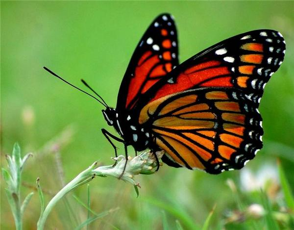

Вступ
І це дійсно так, в дивно різноманітному світі комах саме метелики є найпрекраснішими створіннями. До того
ж метелики не тільки красиві, деякі
Метелик: опис, будова, характеристика. Як виглядає метелик?
Згідно зоологічної класифікації метелики відносяться до членистоногих комах, загону лускокрилих. В
давнину метелик асоціювався
Зовнішня будова метелика складається з двох частин: тіла, яке захищене міцним хітиновим панциром та крил. Тіло метелика в свою чергу складається голови, грудей і черевця. Далі детально на них зупинимося.
Голова метелика округлої форми з плескатою потиличною частиною з’єднана з грудьми. Опуклі очі метелика
круглої або овальної форми займають більшу частину поверхні голови. Самі очі мають складну фасеточну
будову, завдяки якій метелики мають
ривалість життя метелика сильно залежить від його виду та від клімату, в якому він мешкає. Зазвичай життя
метелика коротке, і триває від декількох днів, до декількох тижнів. Однак є і так звані
метелики-довгожителі, здатні жити до двох років. Але до такого поважного за
Груди метелика мають трьох-сегментну будову. Передня їх частина менше середньої і задньої. На задній частині грудей метелика розташовані три пари ніжок (або лапок), що мають характерну для комах будову. Передні лапи метелика на гомілках мають шпори, які призначені для підтримки гігієни вусиків
Зовнішня будова метелика складається з двох частин: тіла, яке захищене міцним хітиновим панциром та крил. Тіло метелика в свою чергу складається голови, грудей і черевця. Далі детально на них зупинимося.
Голова метелика округлої форми з плескатою потиличною частиною з’єднана з грудьми. Опуклі очі метелика
круглої або овальної форми займають більшу частину поверхні голови. Самі очі мають складну
Так схематично виглядає внутрішня будова метелика.
На кордоні лобової і тім’яної частини голови у метелика є вусики. Завдяки ним метелики можуть
орієнтуватися в навколишньому просторі,
Крила метелика складаються з двох пар, вони покриті плоскими лусочками різної форми, пронизані
поздовжніми і поперечними жилками і мають перетинчасту будову. Причому розмір задніх крил може бути як
однаковим з передніми крилами, так і значно менший. Саме
Розмір метелика, точніше, його розмах крил в залежності від виду може становити від 2 мм до 31 см.